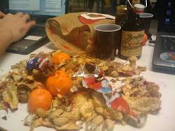
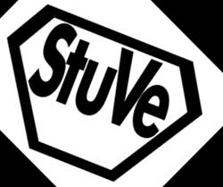

StuVe
- 1: Aktuelles.
- 1.1: Aktuelle Projekte.
- 1.2: Mitarbeit & Jobs.
- 1.3: Verfasste Studierendenschaft.
- 1.4: Studentische Wahlen 2015.
- 1.5: Veranstaltungen.
- 1.6: Presse.
- 2: Service.
- 3: Struktur.
- 4: Kontakt.
- 5: Impressum.
|  |
Mitarbeiten?
Du würdest gern eine Aufgabe übernehmen, ein neues Referat gründen oder in einem schon bestehenden Bereich mitarbeiten?
Auf unserer Homepage findest du die aktuellen Ausschreibungen für alle möglichen Aufgaben in der StudierendenVertretung, eine Übersicht über die Gremien oder eine Liste aller bisherigen Referate. Wenn du dich schon konkret für eine Aufgabe interessierst oder einfach mal reinschnuppern willst, meld dich einfach direkt bei der entsprechenden Stelle oder schreib uns eine Mail an die allgemeine Kontaktadresse.
Herzlich Willkommen auf den Seiten der Studierendenvertretung der Universität Ulm
Aktuelle Infos
Chipkartenfreifahrt auf dem Campus abgeschafft, niemand zuständig, niemand mit Plan. (Mit Kommentar)
Ab dem 1.7. reicht der Studierendenausweis nicht mehr als Fahrberechtigung zwischen Uni Süd und Manfred-Börner-Straße. So stand das lapidar auf einem Aushang – der erste Hinweis, den die StuVe eher zufällig über diese Änderung entdeckte. Gerne hätten wir euch deutlich frühzeitiger informiert, was es damit auf sich hat, wie es dazu kam, und wie ihr am besten vorgeht. Bei der Recherche kamen wir uns aber irgendwo zwischen Buchbinder Wanninger und Passierschein A38 vor. Eine Geschichte über... [mehr]Mehr Stellplätze für Radler_innen
Überfüllte Fahrradständer sowohl auf dem West- und Ostcampus haben die StuVe auf den Plan gerufen: Wir arbeiten dran. [mehr]Verspätung? Hier siehst du's!
Wann kommt eigentlich der Bus? Im Südforum der Uni, in O27 und in der FS-West siehst du das ganz einfach auf einer Dynamischen Fahrgastinformation (DFI). Jetzt kam auch in der Cafete Nord ein DFI-Monitor dazu. [mehr]Ausschreibung Beauftragte für den Haushalt (m/w)
Wir suchen im Namen der StudierendenVertretung eine Beauftragte für den Haushalt (männlich oder weiblich) für die rechtlich vorgeschriebenen Aufgaben im Bereich der Finanzangelegenheiten der Verfassten Studierendenschaft der Universität Ulm und darüber hinaus auch gerne für die allgemeine Unterstützung in diesem Bereich. [mehr]Auch die StuVe erledigt ihre Hausaufgaben ...
... bei der langen Nacht des Lernens und Schreibens. [mehr]"Miteinander statt gegeneinander" - Kundgebung mit Sternmarsch am Samstag, den 7. Februar ab 15.30Uhr
An die Studierenden und Beschäftigten der Uni Ulm: Wir laden euch ganz herzlich ein zum Sternmarsch mit Kundgebung. [mehr]Wenn wegen Schnee der Bus nicht fährt
Sowohl am Sonntag (1.2.2015) als auch am Montag (2.2.) war die Wissenschaftsstadt wegen Schneeglätte für mehr als eine Stunde vom Rest der Stadt vollständig abgeschnitten. Am Montag musste zusätzlich der Busverkehr in der gesamten Stadt eingestellt werden. Wir haben Tipps für euch und Lektionen für uns gesammelt. [mehr]Preisaufschlag beim Semesterticket und Fahrplanwechsel 2014
Zum 14. Dezember gilt im DING-Verbund wieder ein neuer Fahrplan – und zum 1. Januar 2015 gelten auch für das Semesterticket neue Preise [mehr]Besser Bus fahren – Hinweise zum Semesterstart
Wie schon zum Start des vergangenen Wintersemesters bittet das Mobilitätsreferat alle Studierenden wieder um die Beachtung folgender Punkte, damit es nicht zu Chaos auf dem Weg zur und von der Uni kommt. Ein- und Aussteigen …ist der Teil der Reise, der im Zweifel für die heftigsten Verspätungen sorgt – oft sogar bis in die Folgefahrt hinein, denn wenn der Bus in die Stadt wegen Lichtschranken-Steher_innen massiv Verspätung eingefahren hat, kann er unter Umständen die Folgefahrt gar nicht mehr... [mehr]ARTHEN - Eine künstlerische Suche nach Europa, Ausstellungseröffnung an der Uni Ost
Kultur NACH Tisch: Fotografien von Anna-Lena Sender und Nora Schröder, im Ausgangsbereich der Mensa, bis Anfang 2015. Eröffnung am Montag, den 27.10.2014, um 13.30 Uhr: die Fotografinnen machen eine kurze Führung, der Ulmer Künstler Mark Klawikowski sprayt zum Thema „Europa“. [mehr]Erster „Familienstammtisch“
Am Samstag, den 25.10.2014, findet in der FS-West der erste Familienstammtisch der StuVe statt. [mehr]Die StuVe ist umgezogen!
Der Festpunkt M25 wird umgebaut – StuVe, FS Lehramt, FS Mathe, FS Medizin, FS MolMed, FS Physik und FS Zahnmedizin sind seit September im N26 zu finden! [mehr]
Was macht denn diese StuVe?
/
- Ich will doch eigentlich nur in Ruhe studieren…
- Unzufrieden?
oder trag dich auf der StuVe-Mailingliste ein.
Veranstaltungshinweise
Hier findet ihr eine kleine Auswahl an Veranstaltungen in und um Ulm. Ein größeres Angebot gibt es auf der Seite des Kulturreferats.